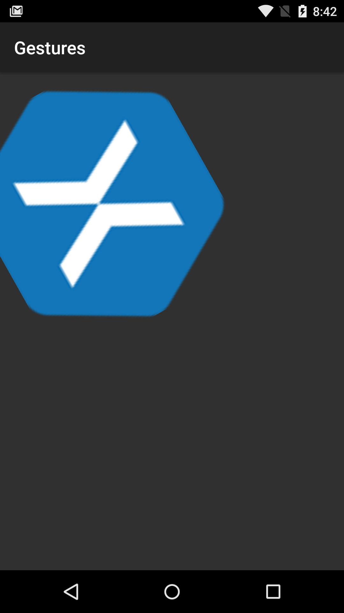

Duration
20 minutes
Goals
The primary goal of this exercise is to create a rotation gesture recognizer and add it to an existing application.
 |
 |
Required assets
This exercise is a continuation of the previous exercise. You can use your existing solution or start with the completed solution in the Exercise 2 folder. The Exercise 3 folder contains a completed a solution which you can use to check your work. Please make sure you have these folders before you begin.
Steps
Below are the step-by-step instructions.
Start by opening your completed solution from Exercise 2; alternatively, you can use the completed solution in the Exercise 2 folder.
Create IOnRotationGestureListener
The Android APIs do not include a rotation gesture so we'll create one. The first step is to create the gesture interface.
- Add a new interface named IOnRotationGestureListener.
- Open the new file and add a single void method definition OnRotate that takes a float parameter named angle.
- Change the namespace to RotationGesture.
Create a Rotation Gesture Detector class
We'll create a rotation gesture detector class, following the patterns set by the Android APIs.
- Create a new class named RotationGestureDetector.
- Change the namespace to RotationGesture.
- Add a
IOnRotationGestureListenerfield named rotationListener. - Add a constructor that takes an
IOnRotationGestureListenerparameter named listener. - Set rotationListener using the passed in listener parameter.
- Add a public
booleanmethod named OnTouchEvent that accepts aMotionEventparameter named e. - Add two fields of type float named angle and angleOffset.
Add the angle calculation code
To implement a rotation gesture detector, we'll need code to calculate the angle relative to the screen between two touch locations. This code has been provided for you below; you may examine it to see how it works.
copy the two methods below into your RotationGestureDetector class.
float GetAngle (MotionEvent e)
{
return GetAngle (e.GetX(0), e.GetY(0), e.GetX(1), e.GetY(1));
}
float GetAngle (float x1, float y1, float x2, float y2)
{
double angle = Math.Atan2((y1 - y2), (x1 - x2));
return (float)(angle * 180 / Math.PI);
}
Respond to Touch Events
Just like we did in AND240, we'll create a switch statement in the OnTouchEvent method based on the MotionAction's ActionMasked.
- In
OnTouchEvent, create a switch statement based one.ActionMasked. - Add case statements for
MotionEventActions.PointerDownandMotionEventActions.Move.
Respond to PointerDown Actions
We'll need to calculate the relative angle when two fingers touch the screen.
Remember, MotionEventActions.Down is triggered when the first finger touches the screen,
MotionEventActions.PointerDown is triggered for any additional fingers. We'll perform the calculation when two fingers are on screeen.
- In the case statement for
PointerDown, when the pointer count is exactly 2, use theGetAnglemethod to find the initial angle of the fingers, from that subtract angle and save it to angleOffset.
Respond to Move Actions
The next steps are to be completed in the MotionActionEvents.Move case.
- Check
e.PointerCountto ensure we have at least two fingers touching the screen. - If so, calculate the angle using the
GetAnglemethod.
To find the true angle, subtract angleOffet and save the result in angle. - Notify the rotation listener; ensure rotationListener isn't
null, then invokeOnRotate, passing in angle.
Add a Rotation Gesture Detector to MainActivity
The RotationGestureDetector class is now complete.
The final steps are to use the listener and create an instance of the detector in MainActivity.
- Add a
RotationGesturefield named rotationGesture. - Instantiate rotationGesture in the
OnCreatemethod, passingthisin for the listener parameter. - Pass the
MotionEvente to rotationGesture in theOnTouchEventmethod. - Implement
IOnRotationGestureListeneron MainActivity. - Create the required
OnRotationmethod. - In
OnRotation, set xamLogo'sRotationproperty to the passed in angle parameter. - Run the app!
Summary
In this exercise you completed your multi-gesture app by adding a custom rotation gesture to your existing scrolling and scaling application.
To achieve this, you had to build the rotation gesture from scratch by creating and implementing the IOnRotationGestureListener interface and the RotationGestureDetector class.